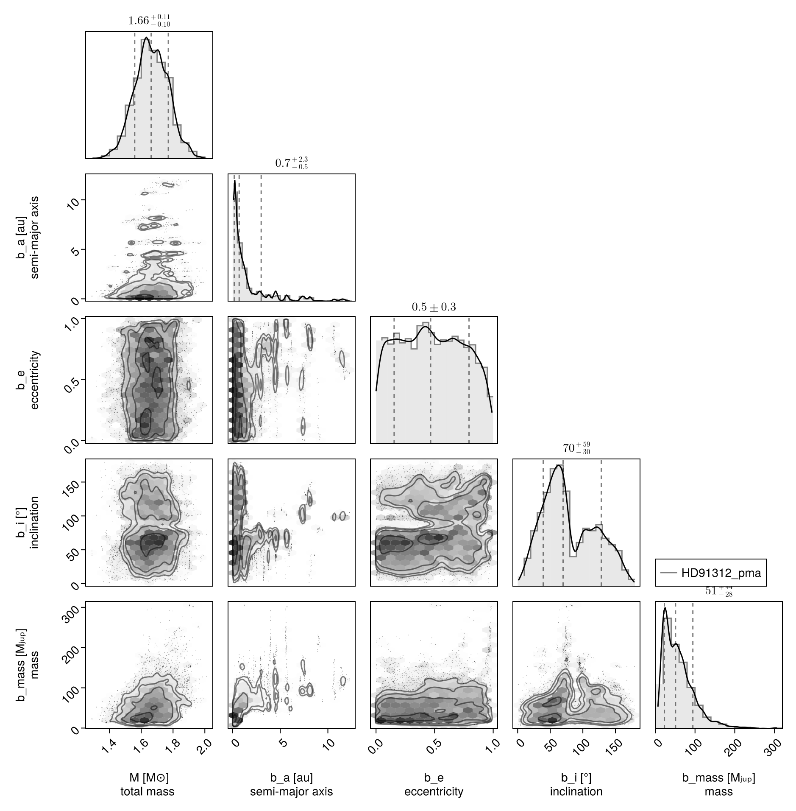
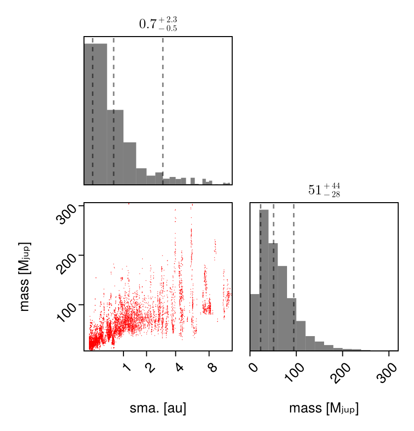
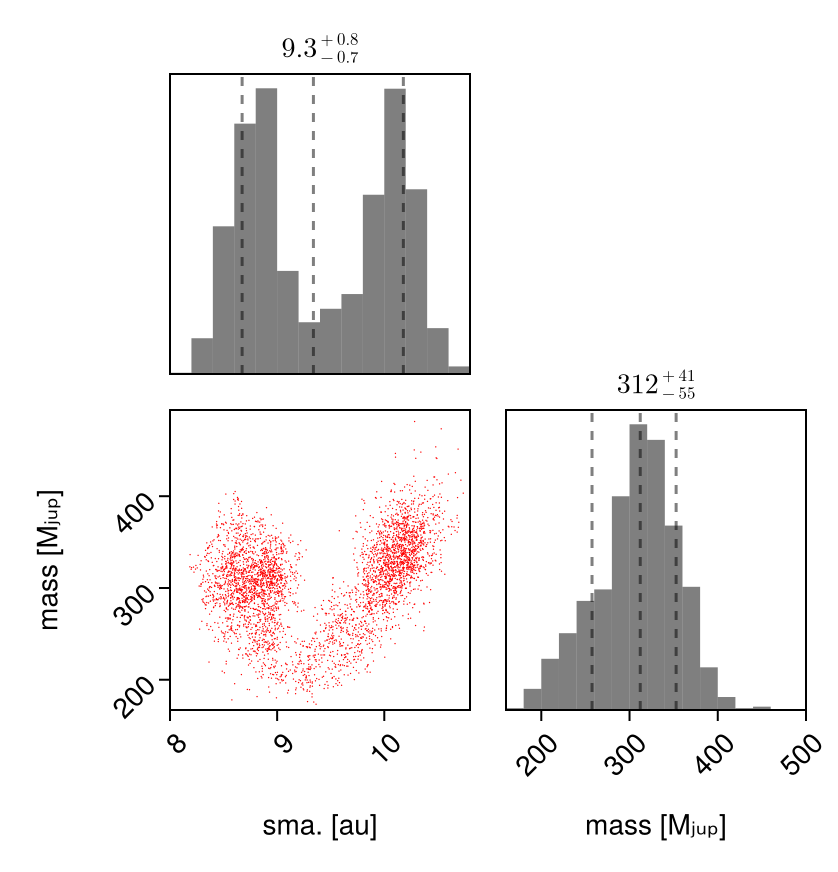
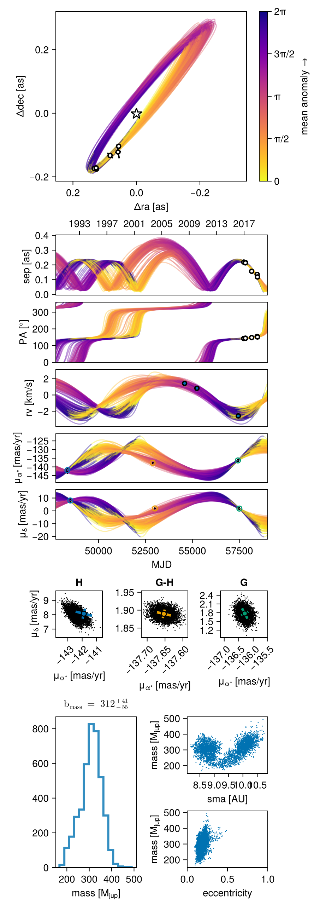
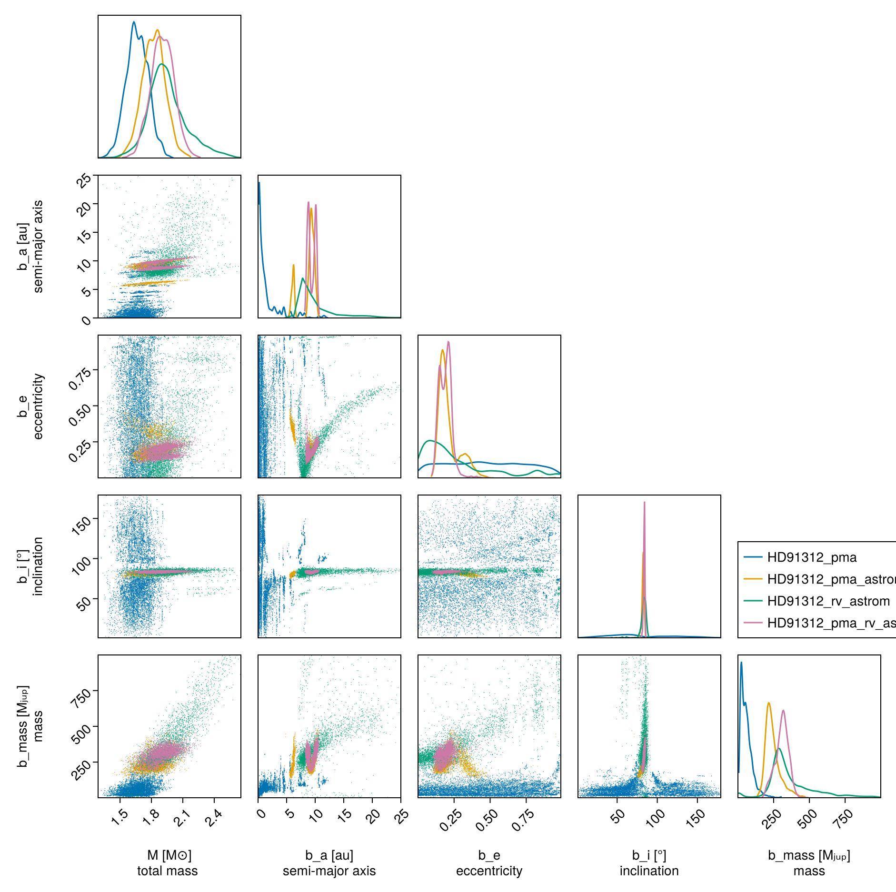

Fit Proper Motion Anomaly
Octofitter.jl supports fitting orbit models to astrometric motion in the form of GAIA-Hipparcos proper motion anomaly (HGCA; https://arxiv.org/abs/2105.11662). These data points are calculated by finding the difference between a long term proper motion of a star between the Hipparcos and GAIA catalogs, and their proper motion calculated within the windows of each catalog. This gives four data points that can constrain the dynamical mass & orbits of planetary companions (assuming we subtract out the net trend).
If your star of interest is in the HGCA, all you need is it's GAIA DR3 ID number. You can find this number by searching for your target on SIMBAD.
For this tutorial, we will examine the star and companion HD 91312 A & B discovered by SCExAO. We will use their published astrometry and proper motion anomaly extracted from the HGCA.
We will also perform a model comparison: we will fit the same model to four different subsets of data to see how each dataset are impacting the final constraints. This is an important consistency check, especially with proper motion / absolute astrometry data which be susceptible to systematic errors.
The first step is to find the GAIA source ID for your object. For HD 91312, SIMBAD tells us the GAIA DR3 ID is 756291174721509376.
Fitting Astrometric Motion Only
Initial setup:
using Octofitter, Distributions, RandomWe begin by finding orbits that are consistent with the astrometric motion. Later, we will add in relative astrometry to the fit from direct imaging to further constrain the planet's orbit and mass.
Compared to previous tutorials, we will now have to add a few additional variables to our model. The first is a prior on the mass of the companion, called mass. The units used on this variable are Jupiter masses, in contrast to M, the primary's mass, in solar masses. A reasonable uninformative prior for mass is Uniform(0,1000) or LogUniform(1,1000) depending on the situation.
For this model, we also want to place a prior on the host star mass rather than system total mass. For exoplanets there is litte difference between these two values, but in this example we have a reasonably informative prior on the host mass, and know from the paper that the companion is has a non-neglible effect on the total system mass.
To make this parameterization change, we specify priors on both masses in the @system block, and connect it to the planet.
Retrieving the HGCA
To start, we retrieve the HGCA data for this object.
hgca_like = HGCALikelihood(gaia_id=756291174721509376)For this example, we will speed things up by treating the HGCA measurements as instantaenous. The default is to average measurements 25 times over the duration of each mission. For real inference, you'll want to increase this or leave it at the default value, unless you have reason to believe the companion has an orbital period much greater than 20 years or so.
hgca_like = HGCALikelihood(gaia_id=756291174721509376, N_ave=1)HGCALikelihood Table with 3 columns and 4 rows:
epoch meas inst
┌────────────────────
1 │ 48345.7 ra hip
2 │ 48500.8 dec hip
3 │ 57423.6 ra gaia
4 │ 57503.4 dec gaiaPlanet Model
@planet b Visual{KepOrbit} begin
a ~ LogUniform(0.1,20)
e ~ Uniform(0,0.999)
ω ~ UniformCircular()
i ~ Sine() # The Sine() distribution is defined by Octofitter
Ω ~ UniformCircular()
mass = system.M_sec
θ ~ UniformCircular()
tp = θ_at_epoch_to_tperi(system,b,57423.0) # epoch of GAIA measurement
endPlanet b
Derived:
ω, Ω, mass, θ, tp,
Priors:
a Distributions.LogUniform{Float64}(a=0.1, b=20.0)
e Distributions.Uniform{Float64}(a=0.0, b=0.999)
ωy Distributions.Normal{Float64}(μ=0.0, σ=1.0)
ωx Distributions.Normal{Float64}(μ=0.0, σ=1.0)
i Sine()
Ωy Distributions.Normal{Float64}(μ=0.0, σ=1.0)
Ωx Distributions.Normal{Float64}(μ=0.0, σ=1.0)
θy Distributions.Normal{Float64}(μ=0.0, σ=1.0)
θx Distributions.Normal{Float64}(μ=0.0, σ=1.0)
Octofitter.UnitLengthPrior{:ωy, :ωx}: √(ωy^2+ωx^2) ~ LogNormal(log(1), 0.02)
Octofitter.UnitLengthPrior{:Ωy, :Ωx}: √(Ωy^2+Ωx^2) ~ LogNormal(log(1), 0.02)
Octofitter.UnitLengthPrior{:θy, :θx}: √(θy^2+θx^2) ~ LogNormal(log(1), 0.02)
System Model & Specifying Proper Motion Anomaly
Now that we have our planet model, we create a system model to contain it.
We specify priors on plx as usual, but here we use the gaia_plx helper function to read the parallax and uncertainty directly from the HGCA catalog using its source ID.
We also add parameters for the star's long term proper motion. This is usually close to the long term trend between the Hipparcos and GAIA measurements. If you're not sure what to use here, try Normal(0, 1000); that is, assume a long-term proper motion of 0 +- 1000 milliarcseconds / year.
@system HD91312_pma begin
M_pri ~ truncated(Normal(1.61, 0.1), lower=0.1) # Msol
M_sec ~ LogUniform(0.5, 1000) # MJup
M = system.M_pri + system.M_sec*Octofitter.mjup2msol # Msol
plx ~ gaia_plx(gaia_id=756291174721509376)
# Priors on the center of mass proper motion
pmra ~ Normal(-137, 10)
pmdec ~ Normal(2, 10)
end hgca_like b
model_pma = Octofitter.LogDensityModel(HD91312_pma)LogDensityModel for System HD91312_pma of dimension 14 and 7 epochs with fields .ℓπcallback and .∇ℓπcallback
After the priors, we add the proper motion anomaly measurements from the HGCA. If this is your first time running this code, you will be prompted to automatically download and cache the catalog which may take around 30 seconds.
Sampling from the posterior (PMA only)
Because proper motion anomaly data is quite sparse, it can often produce multi-modal posteriors. If your orbit already has several relative astrometry or RV data points, this is less of an issue. But in many cases it is recommended to use the Pigeons.jl sampler instead of Octofitter's default. This sampler is less efficient for unimodal distributions, but is more robust at exploring posteriors with distinct, widely separated peaks.
To install and use Pigeons.jl with Octofitter, type using Pigeons at in the terminal and accept the prompt to install the package. You may have to restart Julia.
octofit_pigeons scales very well across multiple cores. Start julia with julia --threads=auto to make sure you have multiple threads available for sampling.
We now sample from our model using Pigeons:
using Pigeons
chain_pma, pt = octofit_pigeons(model_pma, n_rounds=13, explorer=SliceSampler())
display(chain_pma)[ Info: Sampler running with multiple threads : true
[ Info: Likelihood evaluated with multiple threads: false
[ Info: Determining initial positions and metric using pathfinder
┌ Info: Found a sample of initial positions
└ initial_logpost_range = (-13.119567014764716, -3.0500921004797767)
────────────────────────────────────────────────────────────────────────────────────────────────────────────────────────
scans restarts Λ Λ_var time(s) allc(B) log(Z₁/Z₀) min(α) mean(α) min(αₑ) mean(αₑ)
────────── ────────── ────────── ────────── ────────── ────────── ────────── ────────── ────────── ────────── ──────────
2 0 4.53 2.1 0.324 6.98e+06 -2.55e+03 0 0.786 1 1
4 0 4.51 6.93 0.118 1.5e+05 -20.9 0 0.631 1 1
8 0 6.07 7.48 0.224 2.53e+05 -15.5 2.52e-75 0.563 1 1
16 0 6.51 8.29 0.434 3.76e+05 -17.6 1.53e-45 0.523 1 1
32 0 7.52 9.24 0.851 6.21e+05 -20.1 9.87e-08 0.459 1 1
64 0 7.68 6.44 1.82 5.91e+07 -24.6 0.0685 0.544 1 1
128 2 8.63 6.65 3.35 1.06e+08 -24.6 0.169 0.507 1 1
256 4 8.83 6.45 6.7 2.13e+08 -22.6 0.35 0.507 1 1
512 20 8.67 6.49 13.4 4.23e+08 -23.2 0.327 0.511 1 1
1.02e+03 51 8.78 6.23 27 8.55e+08 -22.5 0.37 0.516 1 1
2.05e+03 99 8.66 6.01 54.1 1.7e+09 -23 0.398 0.527 1 1
4.1e+03 197 8.74 6.18 108 3.42e+09 -22.5 0.394 0.519 1 1
8.19e+03 415 8.71 6.19 216 6.82e+09 -22.5 0.409 0.519 1 1
────────────────────────────────────────────────────────────────────────────────────────────────────────────────────────Note that octofit_pigeons took somewhat longer to run than octofit typically does; however, as we will see, it sampled successfully from severally completely disconnected modes in the posterior. That makes it a good fit for sampling from proper motion anomaly and relative astrometry with limited orbital coverage.
Analysis
The first step is to look at the table output above generated by MCMCChains.jl. The rhat column gives a convergence measure. Each parameter should have an rhat very close to 1.000. If not, you may need to run the model for more iterations or tweak the parameterization of the model to improve sampling. The ess column gives an estimate of the effective sample size. The mean and std columns give the mean and standard deviation of each parameter.
The second table summarizes the 2.5, 25, 50, 75, and 97.5 percentiles of each parameter in the model.
Pair Plot
If we wish to examine the covariance between parameters in more detail, we can construct a pair-plot (aka. corner plot).
# Create a corner plot / pair plot.
# We can access any property from the chain specified in Variables
using CairoMakie: Makie
using PairPlots
octocorner(model_pma, chain_pma, small=true)
Notice how there are completely separated peaks? The default Octofitter sample (Hamiltonian Monte Carlo) is capabale of jumping 2-3σ gaps between modes, but such widely separated peaks can cause issues (hence why we used Pigeons in this example).
Posterior Mass vs. Semi-Major Axis
Given that this posterior is quite unconstrained, it is useful to make a simplified plot marginalizing over all orbital parameters besides semi-major axis. We can do this using PairPlots.jl:
using CairoMakie, PairPlots
pairplot(
(; a=chain_pma["b_a"][:], mass=chain_pma["b_mass"][:]) =>
(
PairPlots.Scatter(color=:red),
PairPlots.MarginHist(),
PairPlots.MarginConfidenceLimits()
),
labels=Dict(:mass=>"mass [Mⱼᵤₚ]", :a=>"sma. [au]"),
axis = (;
a = (;
scale=Makie.pseudolog10,
ticks=2 .^ (0:1:6)
)
)
)
Model: PMA & Relative Astrometry
The first orbit fit to only Hipparcos/GAIA data was very unconstrained. We will now add six epochs of relative astrometry (measured from direct images) gathered from the discovery paper.
astrom_like = PlanetRelAstromLikelihood(
(epoch=mjd("2016-12-15"), ra=133., dec=-174., σ_ra=07.0, σ_dec=07., cor=0.2),
(epoch=mjd("2017-03-12"), ra=126., dec=-176., σ_ra=04.0, σ_dec=04., cor=0.3),
(epoch=mjd("2017-03-13"), ra=127., dec=-172., σ_ra=04.0, σ_dec=04., cor=0.1),
(epoch=mjd("2018-02-08"), ra=083., dec=-133., σ_ra=10.0, σ_dec=10., cor=0.4),
(epoch=mjd("2018-11-28"), ra=058., dec=-122., σ_ra=10.0, σ_dec=20., cor=0.3),
(epoch=mjd("2018-12-15"), ra=056., dec=-104., σ_ra=08.0, σ_dec=08., cor=0.2),
)
scatter(astrom_like.table.ra, astrom_like.table.dec)
We use the same model as before, but now condition the planet model B on the astrometry data by adding astrom_like to the end of the @planet defintion.
using OctofitterRadialVelocity
rvlike = PlanetRelativeRVLikelihood(
(epoch=mjd("2008-05-01"), rv=1300, σ_rv=150, inst_idx=1),
(epoch=mjd("2010-02-15"), rv=700, σ_rv=150, inst_idx=1),
(epoch=mjd("2016-03-01"), rv=-2700, σ_rv=150, inst_idx=1),
jitter=:jitter_1,
instrument_name=""
)
@planet b Visual{KepOrbit} begin
a ~ LogUniform(0.1,400)
e ~ Uniform(0,0.999)
ω ~ UniformCircular()
i ~ Sine()
Ω ~ UniformCircular()
mass = system.M_sec
θ ~ UniformCircular()
tp = θ_at_epoch_to_tperi(system,b,57737.0) # epoch of astrometry
jitter_1 = 0.0
end astrom_like # Note the relative astrometry added here!
@system HD91312_pma_astrom begin
M_pri ~ truncated(Normal(1.61, 0.1), lower=0.1)
M_sec ~ LogUniform(0.5, 1000) # MJup
M = system.M_pri + system.M_sec*Octofitter.mjup2msol
plx ~ gaia_plx(gaia_id=756291174721509376)
# Priors on the centre of mass proper motion
pmra ~ Normal(-137, 10)
pmdec ~ Normal(2, 10)
end hgca_like b
model_pma_astrom = Octofitter.LogDensityModel(HD91312_pma_astrom,autodiff=:ForwardDiff,verbosity=4)
chain_pma_astrom, pt = octofit_pigeons(model_pma_astrom, n_rounds=12, explorer=SliceSampler())[ Info: Preparing model
┌ Info: Determined number of free variables
└ D = 14
ℓπcallback(θ, args...): 0.000028 seconds (9 allocations: 1.688 KiB)
┌ Info: Tuning autodiff
│ chunk_size = 14
└ t = 1.4727e-5
┌ Info: Selected auto-diff chunk size
└ ideal_chunk_size = 14
∇ℓπcallback(θ): 0.000049 seconds (1 allocation: 176 bytes)
[ Info: Sampler running with multiple threads : true
[ Info: Likelihood evaluated with multiple threads: false
[ Info: Determining initial positions and metric using pathfinder
┌ Info: Found a sample of initial positions
└ initial_logpost_range = (-44.808431999348144, -40.62956244822072)
────────────────────────────────────────────────────────────────────────────────────────────────────────────────────────
scans restarts Λ Λ_var time(s) allc(B) log(Z₁/Z₀) min(α) mean(α) min(αₑ) mean(αₑ)
────────── ────────── ────────── ────────── ────────── ────────── ────────── ────────── ────────── ────────── ──────────
2 0 3.61 4.2 0.315 4.03e+06 -6.54e+03 0 0.748 1 1
4 0 5.38 4.82 0.234 1.52e+05 -462 0 0.671 1 1
8 0 6.8 6.46 0.433 2.44e+05 -391 1.8e-292 0.572 1 1
16 0 6.89 7.44 0.847 4.01e+05 -99.7 1.58e-96 0.538 1 1
32 0 8.13 8.1 1.63 5.64e+05 -69.7 7.27e-19 0.477 1 1
64 1 8.66 4.96 3.45 6.57e+07 -76.8 0.0155 0.561 1 1
128 4 9.13 4.72 6.54 1.19e+08 -75.7 0.00247 0.553 1 1
256 8 9.81 5.05 13.3 2.38e+08 -75.5 0.0166 0.52 1 1
512 15 9.96 6.68 26.6 4.68e+08 -75.1 0.0478 0.463 1 1
1.02e+03 22 10 6.49 51.4 9.22e+08 -74.1 0.127 0.468 1 1
2.05e+03 52 10.2 6.95 103 1.85e+09 -73.8 0.24 0.448 1 1
4.1e+03 107 10.1 6.96 204 3.64e+09 -73.6 0.292 0.449 1 1
────────────────────────────────────────────────────────────────────────────────────────────────────────────────────────Model: PMA & Relative Astrometry & RVs
We now add in three additional epochs of stellar RVs.
using OctofitterRadialVelocity
rvlike = StarAbsoluteRVLikelihood(
(epoch=mjd("2008-05-01"), rv=1300, σ_rv=150),
(epoch=mjd("2010-02-15"), rv=700, σ_rv=150),
(epoch=mjd("2016-03-01"), rv=-2700, σ_rv=150),
instrument_name="SOPHIE",
offset=:rv0,
jitter=:jitter
)
@planet b Visual{KepOrbit} begin
a ~ LogUniform(0.1,400)
e ~ Uniform(0,0.999)
ω ~ UniformCircular()
i ~ Sine()
Ω ~ UniformCircular()
mass = system.M_sec
θ ~ UniformCircular()
tp = θ_at_epoch_to_tperi(system,b,57737.0) # epoch of astrometry
end astrom_like # Note the relative astrometry added here!
@system HD91312_pma_rv_astrom begin
M_pri ~ truncated(Normal(1.61, 0.1), lower=0.1)
M_sec ~ LogUniform(0.5, 1000) # MJup
M = system.M_pri + system.M_sec*Octofitter.mjup2msol
plx ~ gaia_plx(gaia_id=756291174721509376)
# Priors on the centre of mass proper motion
pmra ~ Normal(-137, 10)
pmdec ~ Normal(2, 10)
jitter ~ truncated(Normal(0,400),lower=0)
rv0 ~ Normal(0,10e3)
end hgca_like rvlike b
model_pma_rv_astrom = Octofitter.LogDensityModel(HD91312_pma_rv_astrom,autodiff=:ForwardDiff,verbosity=4)
chain_pma_rv_astrom, pt = octofit_pigeons(model_pma_rv_astrom, n_rounds=12, explorer=SliceSampler())
display(chain_pma_rv_astrom)[ Info: Preparing model
┌ Info: Determined number of free variables
└ D = 16
ℓπcallback(θ, args...): 0.000027 seconds (9 allocations: 1.828 KiB)
┌ Info: Tuning autodiff
│ chunk_size = 16
└ t = 1.59e-5
┌ Info: Selected auto-diff chunk size
└ ideal_chunk_size = 16
∇ℓπcallback(θ): 0.000061 seconds (1 allocation: 192 bytes)
[ Info: Sampler running with multiple threads : true
[ Info: Likelihood evaluated with multiple threads: false
[ Info: Determining initial positions and metric using pathfinder
┌ Info: Found a sample of initial positions
└ initial_logpost_range = (-98.53528878960284, -87.18730655159789)
────────────────────────────────────────────────────────────────────────────────────────────────────────────────────────
scans restarts Λ Λ_var time(s) allc(B) log(Z₁/Z₀) min(α) mean(α) min(αₑ) mean(αₑ)
────────── ────────── ────────── ────────── ────────── ────────── ────────── ────────── ────────── ────────── ──────────
2 0 3.56 3.63 0.389 4.03e+06 -2.85e+03 0 0.768 1 1
4 0 7.04 5.45 0.352 1.55e+05 -1.22e+03 0 0.597 1 1
8 0 5.4 7.23 0.679 2.49e+05 -428 0 0.592 1 1
16 0 8.06 6.86 1.29 3.97e+05 -122 4.1e-23 0.519 1 1
32 0 8.59 8.53 2.51 5.68e+05 -172 9.86e-66 0.448 1 1
64 0 10.2 4.94 5.21 7.81e+07 176 0.000942 0.511 1 1
128 0 9.62 5.62 10.2 1.44e+08 -117 0.00641 0.508 1 1
256 1 10.1 7.11 19.9 2.79e+08 -115 0.00863 0.445 1 1
512 4 10.2 7.78 39.4 5.5e+08 -113 0.0186 0.42 1 1
1.02e+03 8 10.6 8.08 78 1.1e+09 -108 0.044 0.399 1 1
2.05e+03 42 10.7 7.06 153 2.19e+09 -94.3 0.0949 0.428 1 1
4.1e+03 70 10.6 7.68 301 4.3e+09 -100 0.174 0.411 1 1
────────────────────────────────────────────────────────────────────────────────────────────────────────────────────────The mass vs. semi-major axis posterior is now much more constrained:
using CairoMakie, PairPlots
pairplot(
(; a=chain_pma_rv_astrom["b_a"][:], mass=chain_pma_rv_astrom["b_mass"][:]) =>
(
PairPlots.Scatter(color=:red),
PairPlots.MarginHist(),
PairPlots.MarginConfidenceLimits()
),
labels=Dict(:mass=>"mass [Mⱼᵤₚ]", :a=>"sma. [au]"),
)
It is now useful to display the orbits projected onto the plane of the sky using octoplot. This function produces a nine-panel figure showing posterior predictive distributions for velocity (in three dimensions), projected positions vs. time in the plane of the sky, and various other two and three-dimensional views.
octoplot(model_pma_rv_astrom, chain_pma_rv_astrom, show_mass=true)
Model: Relative Astrometry & RVs (no PMA)
There is a final model we should consider: one using the RV and astrometry data, but not the proper motion anomaly:
using OctofitterRadialVelocity
@planet b Visual{KepOrbit} begin
a ~ LogUniform(0.1,400)
e ~ Uniform(0,0.999)
ω ~ UniformCircular()
i ~ Sine()
Ω ~ UniformCircular()
mass = system.M_sec
θ ~ UniformCircular()
tp = θ_at_epoch_to_tperi(system,b,57737.0) # epoch of astrometry
end astrom_like # Note the relative astrometry added here!
@system HD91312_rv_astrom begin
M_pri ~ truncated(Normal(1.61, 0.1), lower=0.1)
M_sec ~ LogUniform(0.5, 1000) # MJup
M = system.M_pri + system.M_sec*Octofitter.mjup2msol
plx ~ gaia_plx(gaia_id=756291174721509376)
jitter ~ truncated(Normal(0,400),lower=0)
rv0 ~ Normal(0,10e3)
end rvlike b
model_rv_astrom = Octofitter.LogDensityModel(HD91312_rv_astrom,autodiff=:ForwardDiff,verbosity=4)
chain_rv_astrom, pt = octofit_pigeons(model_rv_astrom, n_rounds=12)[ Info: Preparing model
┌ Info: Determined number of free variables
└ D = 14
ℓπcallback(θ, args...): 0.000023 seconds (9 allocations: 608 bytes)
┌ Info: Tuning autodiff
│ chunk_size = 14
└ t = 1.1582e-5
┌ Info: Selected auto-diff chunk size
└ ideal_chunk_size = 14
∇ℓπcallback(θ): 0.000044 seconds (1 allocation: 176 bytes)
[ Info: Sampler running with multiple threads : true
[ Info: Likelihood evaluated with multiple threads: false
[ Info: Determining initial positions and metric using pathfinder
┌ Info: Found a sample of initial positions
└ initial_logpost_range = (-80.42257723655291, -73.37750005724759)
────────────────────────────────────────────────────────────────────────────────────────────────────────────────────────
scans restarts Λ Λ_var time(s) allc(B) log(Z₁/Z₀) min(α) mean(α) min(αₑ) mean(αₑ)
────────── ────────── ────────── ────────── ────────── ────────── ────────── ────────── ────────── ────────── ──────────
2 0 4.56 3.8 0.319 4.02e+06 -216 0 0.73 1 1
4 0 3.75 3.29 0.222 1.63e+05 -108 1.8e-64 0.773 1 1
8 0 5.61 6.73 0.413 2.3e+05 -83.1 0.000173 0.602 1 1
16 0 6.78 7.85 0.8 4.08e+05 -82.3 4.83e-05 0.528 1 1
32 0 7.58 7.79 1.6 6.19e+05 -82.6 0.226 0.504 1 1
64 1 7.73 3.94 3.31 6.37e+07 -82.9 0.214 0.624 1 1
128 4 7.88 4.27 6.42 1.17e+08 -87.9 0.352 0.608 1 1
256 14 7.64 4.44 12.7 2.3e+08 -87.4 0.402 0.61 1 1
512 24 7.95 5.09 25.6 4.65e+08 -87.1 0.377 0.579 1 1
1.02e+03 33 7.91 5.73 51 9.25e+08 -86.4 0.371 0.56 1 1
2.05e+03 79 7.89 5.74 102 1.86e+09 -86.9 0.432 0.56 1 1
4.1e+03 181 7.97 5.71 202 3.66e+09 -87.2 0.43 0.559 1 1
────────────────────────────────────────────────────────────────────────────────────────────────────────────────────────Model Comparison
Let's now display the constraints provided by each data set in a single corner plot
# Create a corner plot / pair plot.
using CairoMakie: Makie
using PairPlots
octocorner(
model_pma,
chain_pma,
chain_pma_astrom,
chain_rv_astrom,
chain_pma_rv_astrom,
small=true, # pass small=false to show all variables
axis=(;
b_a = (;lims=(low=0, high=25))
),
viz=(
PairPlots.MarginDensity(),
PairPlots.Scatter()
)
)
We see that the constraints provided by the PMA, the astrometry, and the radial velocity data all individually overlap, and agree with the joint model constraint. This is means that none of the datasets are in tension with each other, which might suggest an issue with the data or with the modelling assumptions (e.g. single planet).